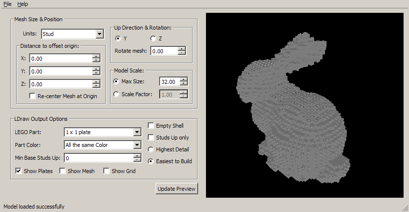

To use LSculpt, you first need some kind of 3D mesh. LSculpt works with OBJ, STL and PLY.
Click on a control to see what it does.
This option controls how other controls measure sizes in the imported 3D mesh. This affects 'Distance to offset origin', and 'Scaling: Max Size & Scale Factor', which control the final, physical size of the LEGO model that LSculpt creates. Options are 'Stud', 'LDraw Units', or some measure of distance (milimeters, inches, etc).
For example, setting 'Units' to 'Stud' and 'Max Size' to 32 will give you a final model less than 32 studs long overall.
These controls allow you to move the center of the imported mesh. This is useful if you want LSculpt to add an extra layer or two of plates in one particular direction.
This option is used together with the 'Distance to offset origin' options, and will move the imported mesh back to the center of LSculpt's world.
These control which direction the imported mesh is facing.
These control how many studs LSculpt will use to build the LEGO model.
This controls what LEGO part LSculpt will build your model out of.
Options are:
The first two options are high quality, accurate versions of their respective parts. The last two are greatly simplified versions of their parts: use either of these if LSculpt is running slow for you. You can set this to 'simple 1x1 tile', tweak your model until you are satisfied, then set it to 1x1 plate and export to LDraw for a nice finished product.
This controls how LSculpt chooses colors for your LEGO model. Note that it's not yet possible to choose specific colors directly; this control is useful as a building aid, to help you see how your model is built.
Options are:
Color everything light bley.
Change the color of each successive stack of plates. This is useful to highlight the differences between otherwise similar stacks of plates.
Color all plates that are facing the same direction in the same color. This is useful to get an overall sense of the different big chunks your model is made up of.
This tells LSculpt to make sure that a specific number of layers on the bottom of your model are facing up.
This tells LSculpt to only include the topmost plate in each stack of plates in your model. This is useful when you have a mesh with disconnected or overlapping surfaces that otherwise result in lots of artifacts. This can also help increase LSculpt performance, since it doesn't have to render all the plates buried inside your model.
LSculpt will create a model with all studs facing up.
Allow LSculpt to change plate orientation as much as possible, to get the best possible fit for your mesh. This might result in some areas in your model overlapping with other areas.
LSculpt will change the orientation of plates less often, to make your model easier to build.
These control what LSculpt will include when it is run.
Click this whenever you want to update the model preview in the right pane, usually after making some changes to the controls on this panel.